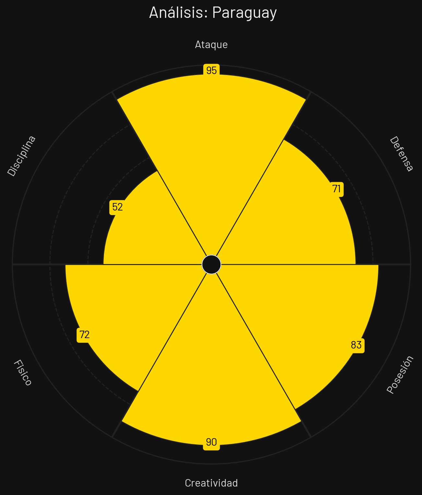

🏆 Tabla de Posiciones
| Pos | Equipo | PJ | G | E | P | GF | GC | DG | Pts |
|---|---|---|---|---|---|---|---|---|---|
| 1 |
 USA
USA
|
3 | 2 | 0 | 1 | 8 | 4 | 4 | 6 |
| 2 |
 Australia
Australia
|
3 | 1 | 1 | 1 | 2 | 2 | 0 | 4 |
| 3 |
 Paraguay
Paraguay
|
3 | 1 | 1 | 1 | 2 | 4 | -2 | 4 |
| 4 |
 Turquía
Turquía
|
3 | 1 | 0 | 2 | 3 | 5 | -2 | 3 |
Estados Unidos

Estilo de Juego e Influencia
Presión alta enérgica, amplitud y profundidad generada por laterales atléticos y transiciones dinámicas sumamente rápidas.
- Formación Base: 4-3-3
- xG Promedio: 1.85 por 90 min
- Zona de Presión: Bloque Alto (PPDA 8.2)
- Jugador Clave: Christian Pulisic
Turquía

Estilo de Juego e Influencia
Juego técnico y fluido desde la base de mediocampo, excelente golpeo de media distancia y juego de posición dinámico.
- Formación Base: 4-2-3-1
- xG Promedio: 1.60 por 90 min
- Zona de Presión: Bloque Medio-Alto (PPDA 9.3)
- Jugador Clave: Hakan Çalhanoğlu
Paraguay

Estilo de Juego e Influencia
Rigor defensivo muy agresivo, marca personal estricta, duelos directos por velocidad exterior y peligro constante en ABP.
- Formación Base: 4-4-2
- xG Promedio: 1.18 por 90 min
- Zona de Presión: Bloque Medio-Bajo (PPDA 10.9)
- Jugador Clave: Miguel Almirón
Australia

Estilo de Juego e Influencia
Juego físico estructurado, énfasis en coberturas colectivas, centros laterales constantes y repliegue ordenado tras pérdida.
- Formación Base: 4-1-4-1
- xG Promedio: 1.15 por 90 min
- Zona de Presión: Bloque Medio (PPDA 11.2)
- Jugador Clave: Mathew Ryan
Análisis Técnico: Grupo D - Mundial 2026
Basándome en los perfiles tácticos proporcionados, presento un análisis técnico detallado de los equipos del Grupo D:
📊 Comparativa General de Atributos
| Atributo | ||||
|---|---|---|---|---|
| Ataque | 81 | 84 | 95 | 72 |
| Defensa | 76 | 84 | 71 | 71 |
| Posesión | 78 | 88 | 83 | 79 |
| Creatividad | 79 | 73 | 90 | 82 |
| Físico | 0 | 80 | 72 | 85 |
| Disciplina | 75 | 77 | 52 | 89 |
🔍 Análisis por Equipo
ESTADOS UNIDOS
Fortalezas
- Intensidad Física (85): Despliegue atlético constante.
- Apoyo Local (86): Estadios llenos a su favor en casa.
- Amplitud en Ataque (81): Laterales doblan constantemente por fuera.
Debilidades
- Eficacia en Área Propia (74): Ocasionales desatenciones defensivas en centros.
Estrategia: Asfixiar la salida rival en bloque alto, robar y transicionar rápidamente aprovechando la velocidad de Pulisic.
TURQUÍA
Fortalezas
- Calidad Asociativa (83): Mediocampo muy técnico con Çalhanoğlu.
- Balón Parado Especializado (82): Centros y tiros libres de alta precisión.
- Dinámica Ofensiva (78): Ataques posicionales elaborados.
Debilidades
- Consistencia Mental (70): Propensión a perder el control si se ven abajo rápido.
Estrategia: Dominar el esférico, circular con paciencia buscando entrelíneas y finalizar con disparos de media distancia o balones parados.
PARAGUAY
Fortalezas
- Intensidad en Duelos (84): Marca física asfixiante sobre rivales.
- Velocidad de Almirón (81): Transiciones directas rápidas.
- Fortaleza en Balón Parado (79): Gran juego aéreo defensivo y ofensivo.
Debilidades
- Volumen Asociativo (64): Dificultades para crear juego fluido en estático.
Estrategia: Interrumpir el juego del oponente con presión física alta y buscar balones largos al espacio para la velocidad de Almirón.
AUSTRALIA
Fortalezas
- Organización Defensiva (77): Bloque coordinado sin fisuras evidentes.
- Juego por Alto (80): Fortaleza física de sus defensas y delanteros.
- Espíritu Colectivo (81): Alto compromiso físico en la marca.
Debilidades
- Falta de Desequilibrio 1v1 (65): Ataques predecibles por la banda.
Estrategia: Mantener las líneas compactas en bloque medio, forzar centros rivales y atacar mediante envíos largos a los extremos.
⚔️ Matchups Clave
🏆 Proyección del Grupo
Clasificación Esperada:
🧠 Análisis Táctico Avanzado
A continuación, se presenta el análisis técnico y cuantitativo del **Grupo D** para el Mundial de Fútbol 2026, evaluando las características colectivas y los contrastes estilísticos de cada selección a partir de los datos de sus gráficos radiales.
🔍 Análisis Perfil por Perfil
1. Australia
Al examinar el archivo `PerfilTacticoAustralia.png`, el conjunto oceánico se caracteriza por un bloque colectivo sumamente maduro, donde el orden y la resistencia mitigan la falta de pegada.
- Fortaleza principal: Un comportamiento ético y táctico impecable (89 en Disciplina), complementado con un gran soporte atlético (85 en Físico). Esto los convierte en un equipo muy difícil de desestabilizar o desgastar con el paso de los minutos.
- Área de mejora: Su capacidad de resolución en las áreas. Con un 72 en Ataque y un 71 en Defensa, carecen de individualidades diferenciales para definir partidos por peso propio en zonas de castigo.
2. Paraguay
De acuerdo con el archivo `PerfilTacticoParaguay.png`, la selección sudamericana rompe moldes históricos al presentarse como una máquina de generar fútbol ofensivo, aunque con una alarmante fragilidad emocional.
- Fortaleza principal: Un potencial ofensivo devastador (95 en Ataque) impulsado por una inventiva de élite (90 en Creatividad) y un excelente criterio para monopolizar el esférico (83 en Posesión).
- Área de mejora: El autocontrol y la concentración. Su bajísimo nivel de disciplina (52) es un factor de alto riesgo que suele traducirse en expulsiones, desatenciones defensivas (71) o penales en contra.
3. Turquía
El desglose del archivo `PerfilTacticoTurquia.png` sitúa al combinado europeo como el competidor más equilibrado y estructuralmente fuerte en las fases de control.
- Fortaleza principal: Un dominio total del ritmo de juego mediante la circulación (88 en Posesión), sólidamente protegido por la mejor línea defensiva del grupo (84) y una contundencia en ataque respetable (84).
- Área de mejora: La imprevisibilidad. Al tener un 73 en Creatividad, su juego puede volverse excesivamente mecanizado u horizontal si el rival les planta un bloque bajo denso y bien escalonado.
4. USA
Al analizar el archivo `PerfilTacticoUSA.png`, la escuadra norteamericana muestra un perfil netamente reactivo, cuya principal arma es el despliegue físico por sobre las ideas.
- Fortaleza principal: Su brutal capacidad atlética (86 en Físico). Esta condición les permite compensar deficiencias posicionales mediante coberturas veloces, presión en bloque y duelos individuales de alta intensidad.
- Área de mejora: La gestación y la definición. Al registrar números muy bajos en Posesión (57), Ataque (60) y Defensa (60), es un equipo que sufrirá demasiado si no logra imponer un contexto de transiciones caóticas.
⚡ Dinámica Táctica del Grupo
El Grupo D expone un escenario de contrastes radicales que desafiará a los estrategas desde la primera jornada: